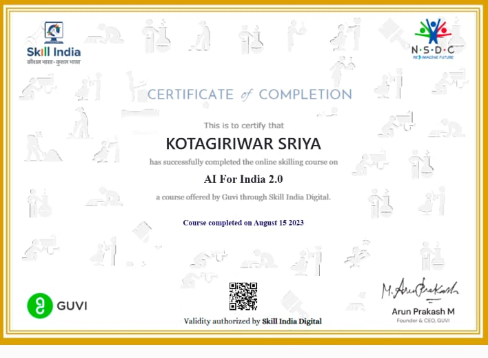

PORTFOLIO
About Me
I'm Sriya Kotagiriwar, currently a 2nd-year student pursuing B.Tech in Computer Science and Engineering.
My journey in the field of technology has been an exciting one, driven by curiosity and a thirst for knowledge.
I am enthusiastic about exploring data science and machine learning.I have a keen interest in web development
and creating user-friendly interfaces.As a student of computer science, my goal is to continue learning and
growing in the field.
*Feel free to reach out to me if you'd like to collaborate or discuss exciting tech-related
opportunities. Let's connect and explore the world of computer science together!*
Academic Excellence
Attained a 10 GPA in 10th standard, highlighting a strong academic foundation.
Achieved a score of 987 in intermediate education, indicating consistent academic performance.
Attained a remarkable EAMCET rank of 477, reflecting my strong performance in the entrance exam.
Obtained a commendable JEE Mains percentile of 98.5, showcasing a high level of competence
in engineering entrance examinations.
Maintained a CGPA of 9.83 in the first year of my BTech program,
reflecting my commitment to academic excellence.
Projects
*Portfolio website
*Temperature converter
*Participated in 24hr Hackathon conducted by COSC-CBIT and presented a movie recommendation system
*Shortlisted for SIH and designing a career guidance application
Certifications
